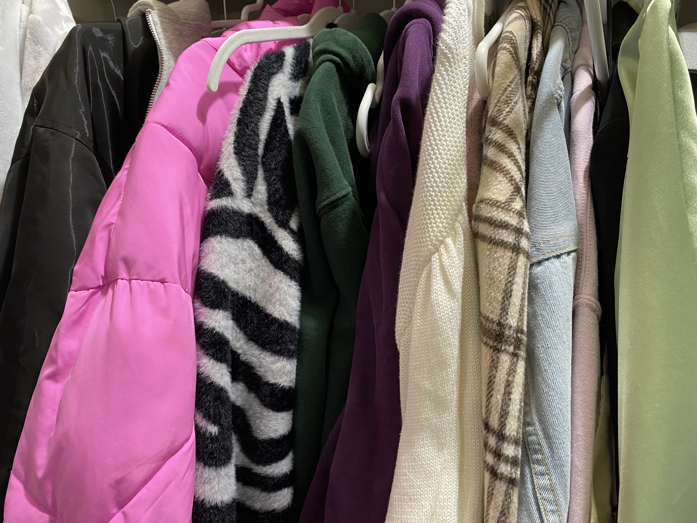

Here are my tips and tricks to knowing what’s in and what’s out
Anything can be made trendy if you know how to style the item. Nothing is ever “out” if you know how to combine the older item with a fresh, new, and trending item. The key is to know how to implement what’s in your wardrobe with older pieces so that every style combo is unique.
There are many ways to follow fashion trends. My favorites include browsing Pinterest, Instagram, watching YouTube and TikTok videos, and simply by shopping.

Pinterest
I use Pinterest for everything, from nail inspiration to hairstyles to clothes. Pinterest is easy to use and generates content based on what you save and like. With this, Pinterest gets to know your sense of style and shows you outfit ideas you might like. Additionally, by searching for things such as “trending now” you will be able to get a sense of what keeps showing up.
Instagram is a great way to look for inspiration in addition to Pinterest. On Instagram, you can follow people whose fashion inspires you and you can use the explore feature to search for more. Additionally, on Instagram, there are shop sections that normally generate the “happening” trends that everyone wants to try out. Also, by scrolling through the accounts you follow, you can start to pick up on what people are posting. People post their best outfits and their best moments, therefore there is a pattern of certain styles and pieces when trends are forming. By keeping an eye out for certain accessories or colors, you will be able to hop on the same trends as the people on your feed.
I personally get a lot of inspiration from YouTube videos because of the content I consume. Below is a list of people who I find particularly trending and whose style I try to emulate.
If it isn’t obvious already, social media is a great way to see what’s trending. Fashion TikTok feeds showcase the newest aesthetics and also inform viewers where to find certain items. Additionally, the more likes a TikTok gets, the bigger the audience it reaches, and the bigger the trend becomes!
By online shopping or window browsing at your local mall, seeing what the stores are carrying can give you an idea of what is currently in style. Although this seems easy, the art is figuring out what the store is carrying that will become a trend that season rather than purchasing what was already trending.